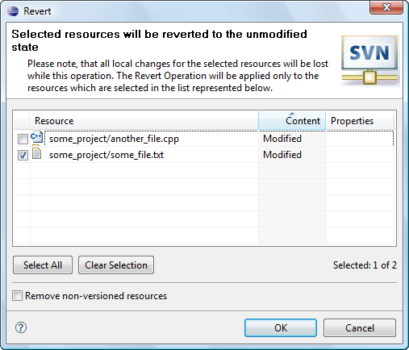

|
|
|
Why shall the user revert his changes? The first and the most simple explanation is that he didn't want to do the changes or made them accidentally but noticed that much later. Reverting action changes a file to a base state. It works like if it deletes the file and then updates it to a base revision, but really it doesn't have to do those operation so it doesn't need any network. To perform the reverting action click on the 'Team>Revert...' menu item of the resource pop-up menu 'Revert...' menu item of the 'SVN main menu group'. The dialog allows the user to choose which resources changes to revert and provides a probability to remove unversioned resources.
|
Note: |
All local changes for the selected resources will be lost while this operation. The Revert Operation will be applied only to the resources which are selected in the list represented in the dialog window. |
This is how 'Revert Dialog' looks like:
